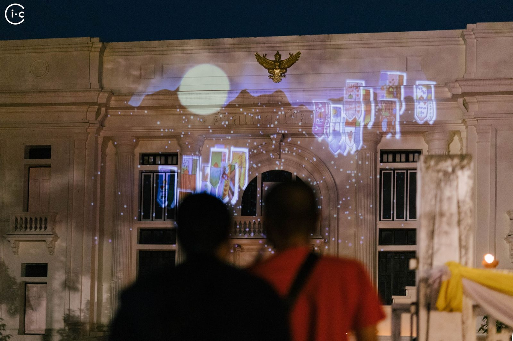
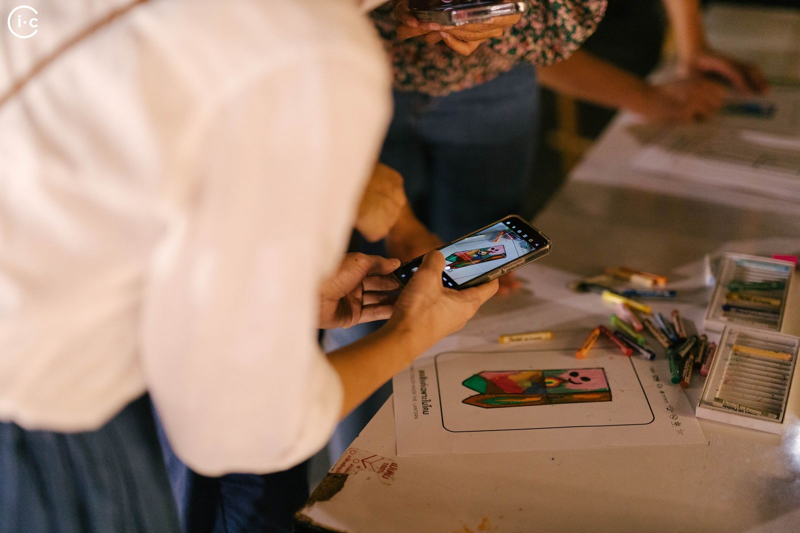

The Loy Krathong festival, known locally as the “Yee Peng festival,” is a spectacular sight in Chiang Mai, where flying lanterns fill the night sky. However, the traditional practice poses a risk to locals as it can cause fires in their homes. To address this, we collaborated with iChiangmai, a local media outlet, to create digital lanterns that the audience could customize with their own designs. We projected these digital lanterns onto an old building in the heart of Chiang Mai, offering a safe and creative way for

Photos: iChiangmai